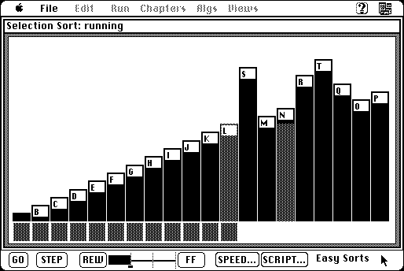

Download
MacBALSA-1.0.2.zip (446K) MacBALSA 1.0.2 repackaged into a zipped hfs disk image and checksum file. The disk image can be mounted with Mini vMac.
MacBALSA-1.0.2.sit.hqx (610K) MacBALSA 1.0.2 in the original format.
copyright: Marc H. Brown, Rick Zaccone
mod date: Oct 6, 1988
license: freeware
official url :
MacBALSA
Does animations that illustrate various computer algorithms, such as sorting methods. Requires the Thread Manager, which requires System 7, and is installed by default in System 7.5. Source code is available (below).

Download Source
MacBALSA-source.zip (418K) MacBALSA 1.0.2 repackaged into a zipped hfs disk image and checksum file. The disk image can be mounted with Mini vMac.
MacBALSA-source.sit.hqx (684K) MacBALSA 1.0.2 in the original format.
If you find these downloads useful, please consider helping the Gryphel Project, which hosts them.
Here are the md5 checksums for the downloads, signed with Gryphel Key 5:
--------- GRY SIGNED TEXT --------- fc99f742f77801f048bd10414faae062 MacBALSA-1.0.2.zip e1226c9764104e4e27eb4c0d6be4a5d5 MacBALSA-1.0.2.sit.hqx f8d4f4e1dcc3648f0c01b33ce53ca224 MacBALSA-source.zip 38fb6b419cc20606a75c80bc9274c562 MacBALSA-source.sit.hqx ------- BEGIN GRY SIGNATURE ------- Gry/4Xa8CFcUzxdN/CTUoYT35CfotLgUu1vtJbW0Idp3ImJGDvq02N5UxOGGF5Iw dR8oPF5ooL2+ckDKWSmZu0WlkLSYwrxhebOX/oQqeIzHFHMRjHdI09S29lq9pse9 YeY1CHAUkPE+ogpzcYhX4EwvicIlsaphj5DjiOF2V0u3pQM3uHdpAWsMZH0JHFoz -------- END GRY SIGNATURE --------